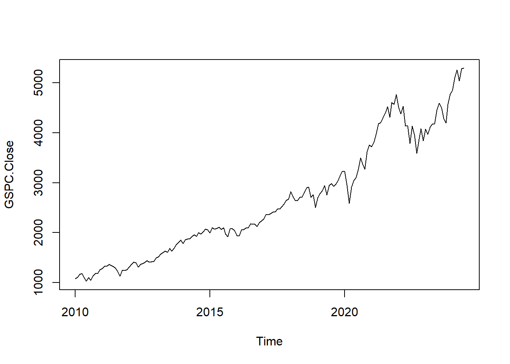
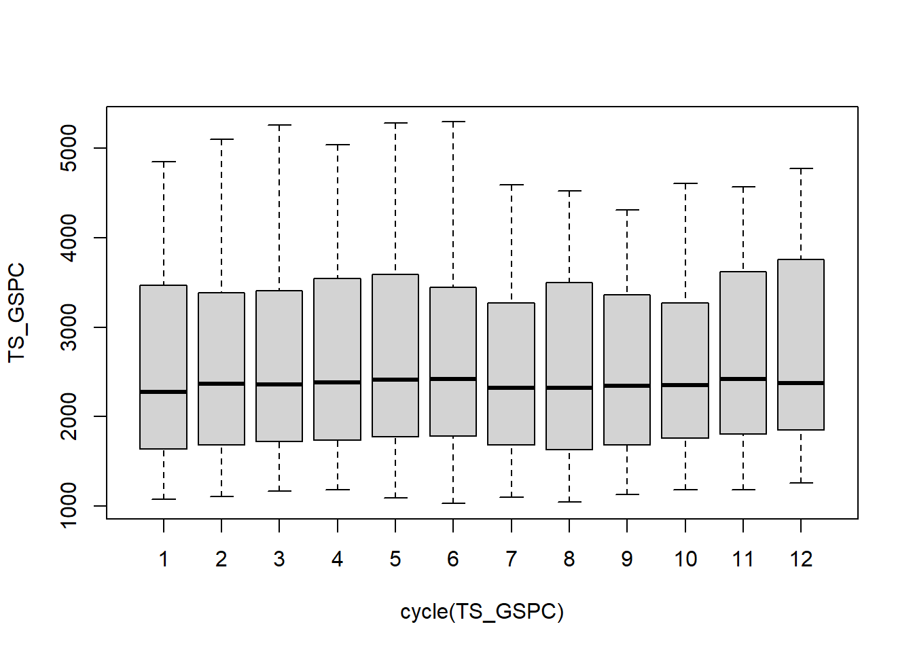

Capítulo 2 Desarrollo del proyecto
Para la obtención de los indices de S&P500 usaremos la biblioteca quantmod, esta es una herramienta en R que proporciona funciones para la descarga, manejo y análisis de datos financieros. No almacena ni proporciona datos financieros en sí misma, sino que se basa en diversas fuentes de datos para obtener información del mercado.
# Cargamos los datos del S&P 500
sp500_returns <- getSymbols("^GSPC", from = "2010-01-01", to = Sys.Date())La función getSymbols() descarga los datos del índice S&P 500 desde la fuente de datos especificada y los almacena en un objeto llamado “GSPC”.
En nuestra etapa exploratoria podemos observar que la fecha inicial es efectivamente enero del 2010 y la fecha final es la fecha actual.
## GSPC.Open GSPC.High GSPC.Low GSPC.Close GSPC.Volume GSPC.Adjusted
## 2010-01-04 1116.56 1133.87 1116.56 1132.99 3991400000 1132.99
## 2010-01-05 1132.66 1136.63 1129.66 1136.52 2491020000 1136.52
## 2010-01-06 1135.71 1139.19 1133.95 1137.14 4972660000 1137.14
## 2010-01-07 1136.27 1142.46 1131.32 1141.69 5270680000 1141.69
## 2010-01-08 1140.52 1145.39 1136.22 1144.98 4389590000 1144.98
## 2010-01-11 1145.96 1149.74 1142.02 1146.98 4255780000 1146.98## GSPC.Open GSPC.High GSPC.Low GSPC.Close GSPC.Volume GSPC.Adjusted
## 2024-05-28 5315.91 5315.91 5280.89 5306.04 3751540000 5306.04
## 2024-05-29 5278.73 5282.27 5262.70 5266.95 3552750000 5266.95
## 2024-05-30 5259.77 5260.21 5222.10 5235.48 3818750000 5235.48
## 2024-05-31 5243.21 5280.33 5191.68 5277.51 5437160000 5277.51
## 2024-06-03 5297.15 5302.11 5234.32 5283.40 4046920000 5283.40
## 2024-06-04 5278.24 5298.80 5257.63 5291.34 3707900000 5291.34A continuación, realizaremos una conversión de datos a zoo (Z’s Ordered Observations) y ts (Time Series). Un objeto zoo es una serie temporal ordenada que consiste en un vector de datos con una marca de tiempo asociada a cada observación. Esto permite que las observaciones estén indexadas por fechas o por otro tipo de marca de tiempo, mientras un objeto ts es una serie temporal que representa un conjunto de observaciones regularmente espaciadas en el tiempo, como datos mensuales, trimestrales o anuales. Se caracteriza por tener un vector de datos y un vector de fechas o periodos de tiempo.
2.1 Conversión a Formato de Serie de Tiempo
Para realizar la respectica serie de tiempo, haremos uso de la función ts, donde la frecuencia al ser data que llega de forma mensual sera de 12.
## GSPC.Open GSPC.High GSPC.Low GSPC.Close GSPC.Volume GSPC.Adjusted
## ene. 2010 1116.56 1150.45 1071.59 1073.87 90947580000 1073.87
## feb. 2010 1073.89 1112.42 1044.50 1104.49 84561340000 1104.49
## mar. 2010 1105.36 1180.69 1105.36 1169.43 103683550000 1169.43
## abr. 2010 1171.23 1219.80 1170.69 1186.69 116741910000 1186.69
## may. 2010 1188.58 1205.13 1040.78 1089.41 127662780000 1089.41
## jun. 2010 1087.30 1131.23 1028.33 1030.71 110106750000 1030.71## GSPC.Close
## [1,] 1073.87
## [2,] 1104.49
## [3,] 1169.43
## [4,] 1186.69
## [5,] 1089.41
## [6,] 1030.712.2 Imagen Serie de Tiempo
 A continuación, realizaremos el proceso de descomposición estacional a la serie temporal utilizando la función decompose(), la cual separa la serie temporal en tres componentes: tendencia, estacionalidad y residuos. Almacenaremos el resultado de esta operación en el objeto GSCP_month_decomp.
2.3 Graficas de la Decomposición de los Datos
# Establecemos el diseño de la ventana de gráficos en tres filas y una columna
par(mfrow=c(3,1))
plot(GSCP_month_decomp$trend, main = "Tendencia")
plot(GSCP_month_decomp$seasonal, main = "Estacionalidad")
plot(GSCP_month_decomp$random, main = "Residuos")
En el grafico anterior podemos observar que la tendencia de los indices S&P500 es de incrementalidad, con periodos de estacionalidad de cada 2 años aproximadente. Y un periodo muy remarcado de Residuos para la pandemia del covid del 2020.
2.4 Ciclo de las series de tiempo
Cuando se realiza una descomposición de series temporales, los residuos son la parte de la serie temporal que no se puede explicar mediante la tendencia y la estacionalidad. Si hay ciclos en los datos, es probable que estos se reflejen en los residuos. Esto significa que los ciclos pueden manifestarse como patrones periódicos o fluctuaciones en los residuos después de que se hayan eliminado la tendencia y la estacionalidad. En este caso, podemos observar que los ciclos no tienen grnades variaciones en el tiempo.
